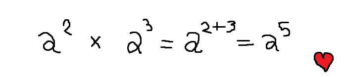

Matemática - Volver al inicio
Ten en mente una cosa. Matemáticas no es más que un sistema, que, es enorme: pero el comprender pequeñas fracciones de este gran sistema no es una tarea compleja. Sabes sumar, sabes multiplicar, sabes dividir, sabes restar. Estas operaciones aritméticas son la base de todo este sistema, y de estas operaciones nacen el resto del sistemas, que no son más que reglas que seguir. El seguir las reglas de un sistema es seguir un "algoritmo", que básicamente es seguir una serie de métodos. Diciendolo así, suena super complejo y dificil. Pero te voy a dar otro punto de vista: solo son sumas, restas, multiplicaciones y divisiones en un orden en específico, y te lo voy a demostrar con una propiedad de las potencias.
Toda potencia multiplicada por otra potencia es igual a su base con sus exponenentes sumados. Básicamente, lo siguiente.

¿Y qué es esto?.. es una tontería. Porque tú sabes tambien que lo es, mantuviste el número de abajo y sumaste los de arriba simplemente porque era una multiplicación. Y fíjate como lo escribí, y aún así fuiste capaz de comprender como es que se realiza la operatoria de esta ecuación. No se trata de tí, se trata de como te lo exponen. Es como cuando hablo contigo, a veces me dices que hablo bien raro, porque uso palabras que nadie usa. Pues es lo mismo con matemáticas, si te hablan de "el coeficiente es igual al numero identidad, por lo tanto esta otra funcion es divergente, y por lo tanto, no es función."
Lo único complejo aquí es el lenguaje, y nada más. Esta es la primera herramienta que te quise dar, porque es la más util, al menos al momento de estudiar todo lo relacionado a matemáticas. Y, mira, que yo en realidad soy muy malo para matemáticas. Lo que pasa es que conozco bastante formulas, y es por eso que puedo hacerte tu tarea, pero yo no se lo realmente complejo e importante de la matemáticas, no se de teória. Que, esto no importa si tu no vas a ser una abogada, pero si importa si quisieses ser una ingeniera, asi que, no es tan importante que aprendas sobre teoría. Pasemos a la siguiente herramienta, esta vez, una herramienta funcional.

Phothomath es una buena herramienta a la hora de resolver ecuaciones de cualquier tipo. Evidentemente, Photomath no es capaz de resolverlas todas porque, existen muchas ramas de la matemática, y es probable que algunas integrales no sean calculadas por Photomath. Photomath está disponible para android, y se sirve de la cámara de tu celular para poder procesar los calculos que tengas en una hoja de papel o en la pantalla de computador. Una vez calcula, te entrega todos los pasos a seguir para llegar a la solución, pudiedo incluso llegar a servirte en algun examen donde te pidan el desarrollo de tu ejercicio.

GeoGebra classic: es una herramienta que sirve para realizar calculos matemáticos, sirviendose de diagrama de coordenadas para jugar con geometría, obtener curvas, circunferencias y demás cuestiones dentro de la plataforma. Sirve para: geometría, integrales, derivadas, funciones, limites, y todo aquello que requiera de un gráfico. Es super útil, y da respuesta a la mayoría de respuestas. Si combinas esta herramienta con el uso de Photomath tendrás un calculo geometrico completo más su correspondiente grafica que es 99% precisa.

En mi experiencia, las herramientas arriba mencionadas, no siempre sirven. A veces los profesores nombran ciertas ecuaciones de distinta forma a como lo hacen la mayoría de profesores, por lo que pasa muchas veces que no podemos encontrar alguna guía que nos pueda ayudar al momento de desarrollar nuestro ejercicio matemático. En este caso, tanto Google como Youtube pueden ayudarnos. En Google, tenemos la capacidad de encontrar la respuesta a nuestro ejercicio con el simple hecho de copiarlo y pegarlo en el buscador. En Youtube, encontraremos mil y una explicaciones de como se realiza el ejercicio: por ejemplo, aquel examen que te hice de geometría, estudié tanto, pero tanto, que ni si quiera hice uso de una calculadora al momento de realizar los problemas de geometría que te daban. Claramente me preocupaba de revisar que estén bien haciendo uso de esta al final, pero ese 95/100 no se hizo usando calculadora, si no que se hizo viendo una tracalada de videos de Youtube que eran tan entretenidos que me llegó a gustar la geometría. Buscar soluciones es facil, tan solo debemos buscar, por ejemplo, "ejercicios de (inserte tipo de ejercicio aquí", o buscar por ejemplo "formula de (inserte ejercicios que el profesor pidió". Estas herramientas que te di son todo el arsenal que uso a la hora de hacer tus examenes o tareas que te envian. Más que nada hago uso de GeoGebra, porque me da muchisima flojera graficar los puntos y estar haciendo rayitas. Pero ahi ves tú que es lo que más te sirve.